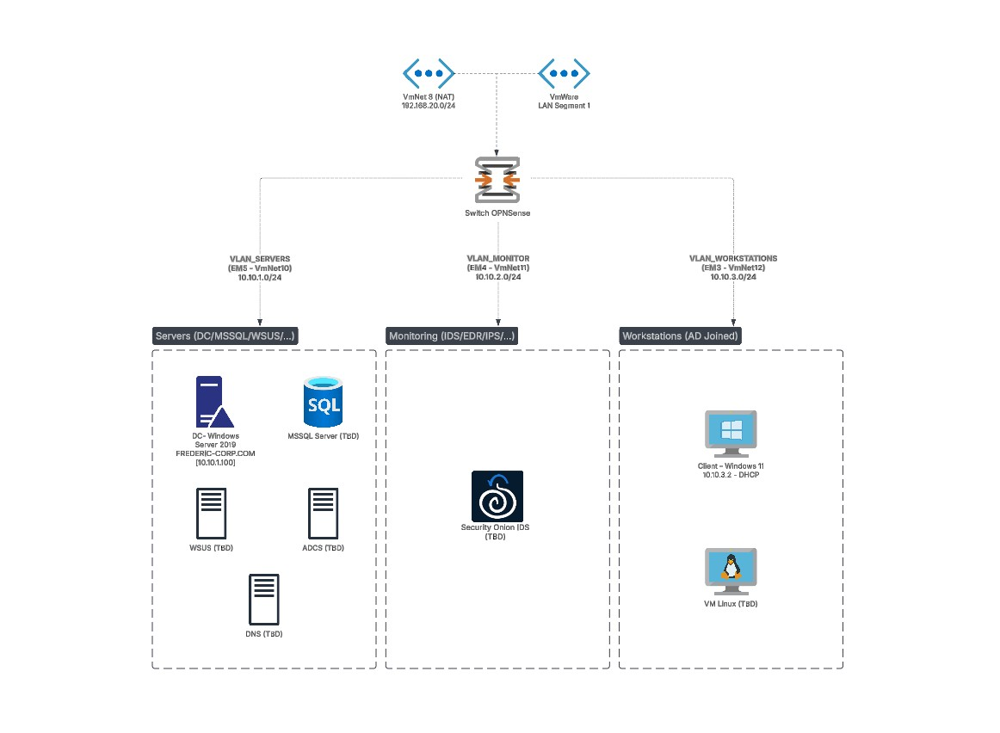

A deliberately vulnerable Active Directory lab for practicing attack techniques and detection engineering end to end. The lab is segmented by an OPNSense firewall and monitored with Security Onion, so the same technique can be observed both from the attacker's and the defender's side.
The notes below cover the lab map, each machine and the misconfigurations planted in the lab. The DC section includes dedicated pages for the deliberately built-in weaknesses: weak LAPS password readability, an exposed MSSQL service, SMB null sessions, and the vulnerable AD setup script itself.
Lab map

Machines & subpages
Everything under this heading is its own subpage - click a machine to open it.
Misconfigurations & ATT&CK mapping
The misconfigurations deliberately planted in the lab, mined from the build notes - each mapped to its MITRE ATT&CK technique.
Firewall GUI reachable from the WAN
The management interface is published on the WAN address, protected only by default credentials.
Weak passwords across the lab
Domain and host accounts share one reused, guessable password.
SMB null sessions enabled
Anonymous SMB enumeration is allowed and a sample share is open to Everyone with full access.
SMB signing disabled
Signing requirements are removed on the server, leaving NTLM relay routes open.
LAPS password readable by a standard user
A regular user holds LAPS read permissions and retrieves the local admin password in clear text.
Exposed MSSQL with xp_cmdshell
The database service is exposed on the domain controller; the write-up focuses on OS command execution through xp_cmdshell.
Weak AD baseline from the vulnerable-AD script
safebuffer/vulnerable-AD seeds extra users, groups and legacy misconfigurations.